画像にリンクがはってあるものは、クリックすると別窓で大きめサイズが表示されます。
| 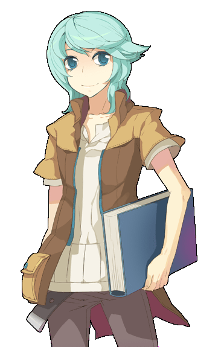 | |
ドイル | ドイル |
| 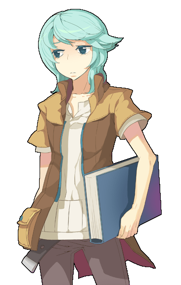 | |
ドイル | ドイル |
ドイル | ハンス |
ハンス | ハンス |
| 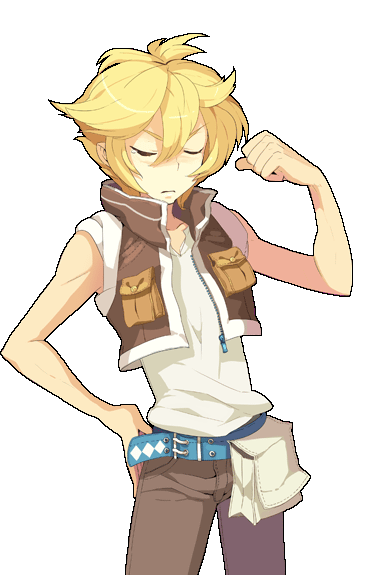 | |
ハンス | ハンス |
| 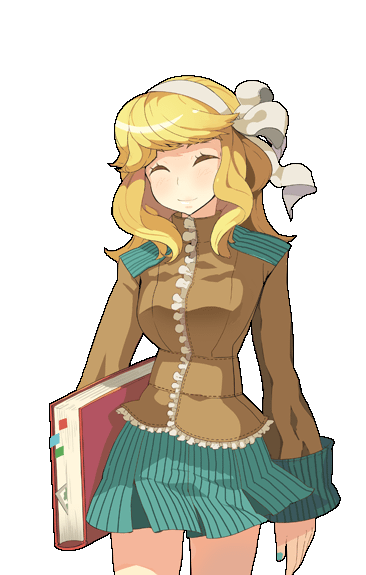 | |
エレン | エレン |
| 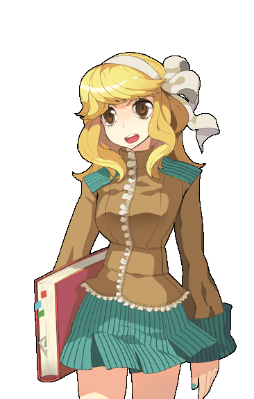 | |
エレン | エレン |

| |
エレン | ローザ・フラガリア |
| 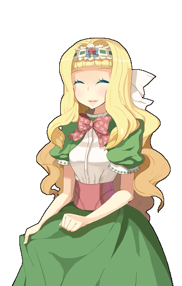 |

|
ローザ・フラガリア | ローザ・フラガリア |
| 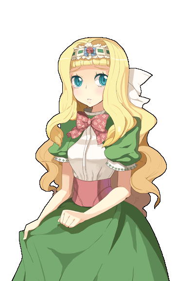 | |
ローザ・フラガリア | ローザ・フラガリア |
| 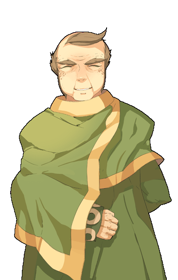 | |
ジオーマ | ジオーマ |
| 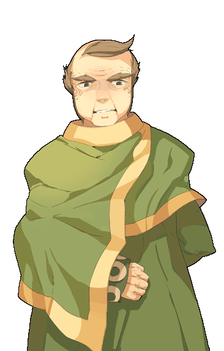 | |
ジオーマ | ジオーマ |
| 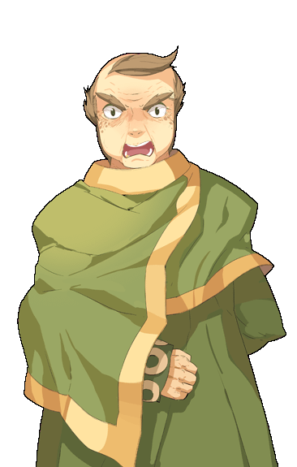 | 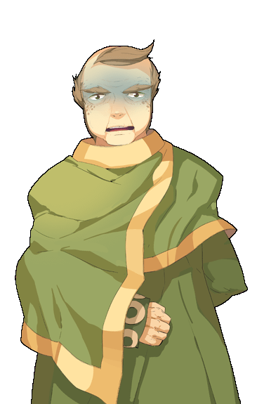 |
ジオーマ | ジオーマ |
| 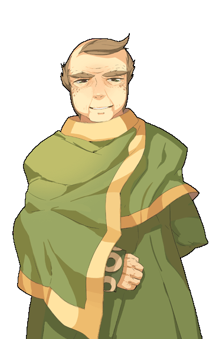 |
| jpn_zioma07.bmp ジオーマ |
back
(c) Gravity Co., Ltd. & Lee MyoungJin(studio DTDS). All rights reserved.
(c) GungHo Online Entertainment, Inc. All Rights Reserved.
当コンテンツの再利用（再転載・配布など）は、禁止しています。